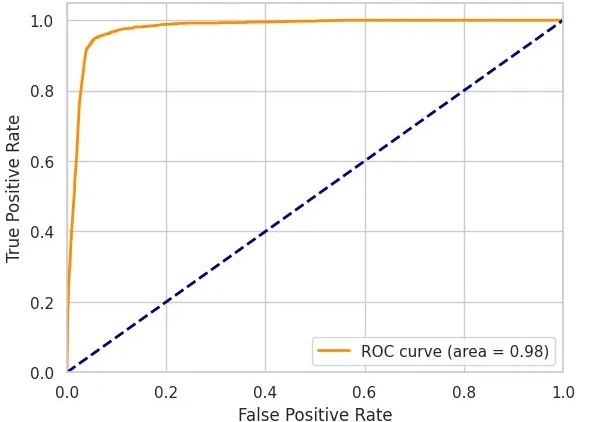
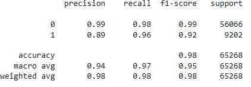
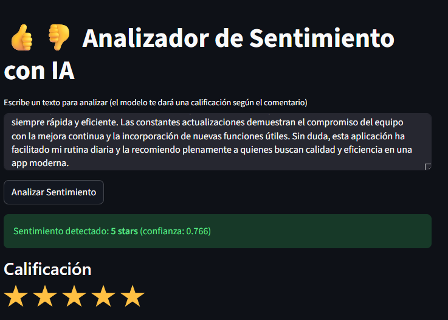
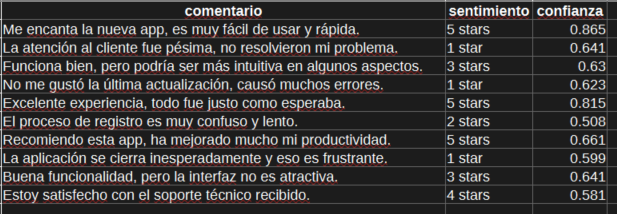
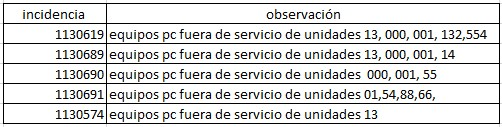
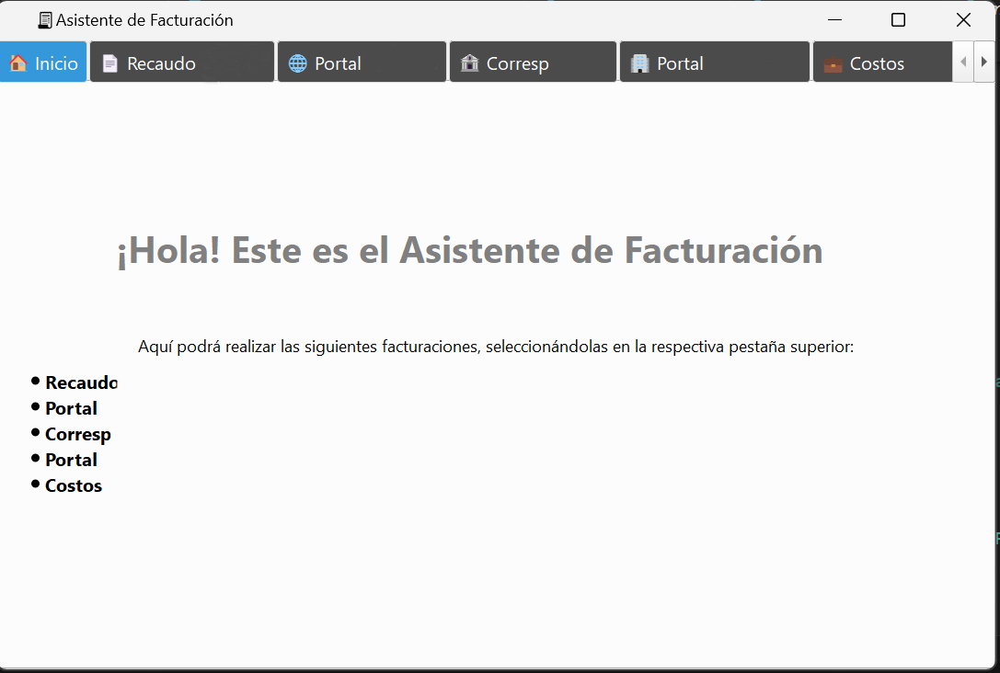
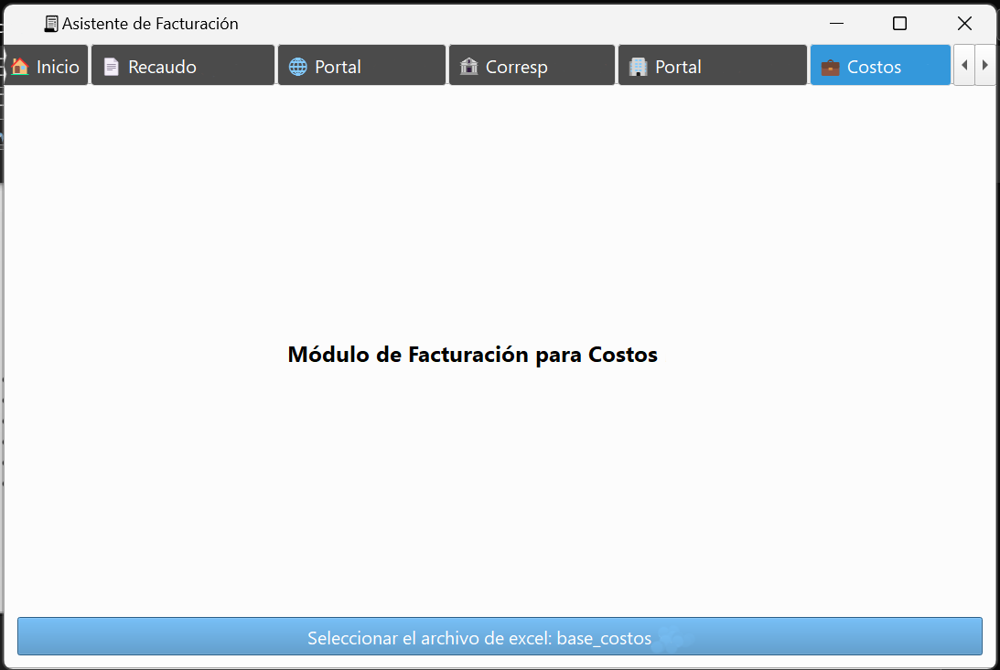
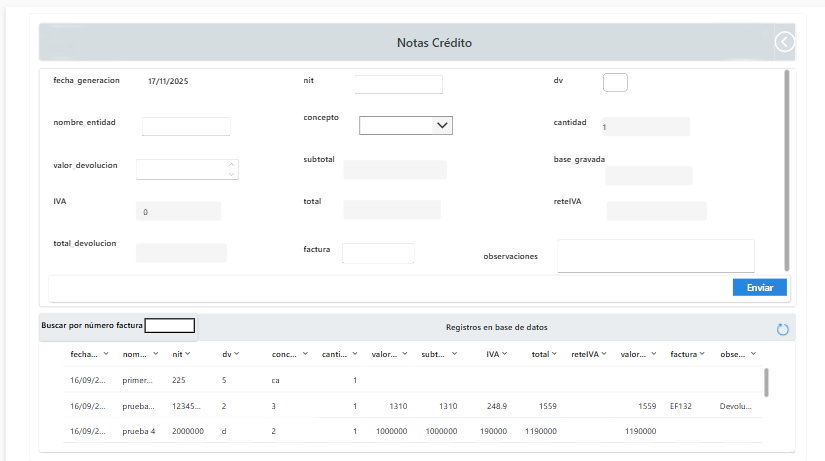
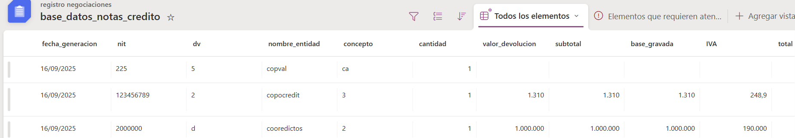

Proyectos Realizados
🤖 Machine Learning y Analítica Aplicada
ML • Clasificación
Random Forest - Mantenimiento Preventivo
Necesidad:
Selección manual diaria de vehículos para mantenimiento preventivo en flota de +200 unidades. Proceso tomaba 2 horas considerando tipo, placa par/impar, días mínimos y capacidad.
Solución:
Modelo Random Forest para clasificación automática de vehículos para mantenimiento (modelo entrenado con 1 año de datos históricos).
Resultados:
- Reducción del proceso de clasificación manual de 2h a 8 minutos con la automatización.
- Ahorro de 9 horas semanales.
- Democratización del proceso.
Árbol del RF

Rendimiento Final
  ⚡ 93% más rápidoML • Detección de Anomalías
Isolation Forest - Detección de Fraude
Necesidad:
Identificar comportamientos transaccionales anómalos en sistema de pago con +1 millón de transacciones mensuales sin etiquetas previas de fraude.
Solución:
Implementación de Isolation Forest (método no supervisado) que aísla datos inusuales sin perfiles previos. Manejo de múltiples dimensiones y estandarización de datos.
Resultados:
- Aumento de 0.01-0.02% en detección de anomalías.
- 1000-2000 transacciones adicionales identificadas/mes.
- Complemento al sistema heurístico existente.
- Detección de aumentos inusuales en transaccionalidad.
ML • Clustering
K-Means - Segmentación de Clientes
Necesidad:
Empresa financiera requería clasificar clientes según flujo de transaccionalidad y montos para encontrar oportunidades comerciales y mejorar servicios.
Solución:
Clasificación mediante K-Means por transaccionalidad mensual y acumulada semestral. Monitoreo continuo del comportamiento de clientes.
Resultados:
- Identificación de 4 grupos: Muy alta, alta, mediana y baja transaccionalidad.
- Monitoreo mensual y semestral.
- Ajustes comerciales basados en datos.
- Mejora en estrategias de fidelización.
 👥 Clientes Segmentados
👥 Clientes Segmentados
ML • Analísis de Sentimientos con IA
Modelo Preentrenado - Sentiment Analysis
Necesidad:
Se requería optimizar y agilizar la clasificación de comentarios de nueva app lanzada al mercado para realizar análisis de acogida.
Solución:
Se implementa un sistema de análisis de sentimientos, utilizando un modelo de lenguaje preentrenado basado en Transformers (Hugging Face) multilenguaje. Se disponibiliza en una interfaz construida en Streamlit para clasificación de mensajes individuales y un Script para la clasificación masiva de mensajes.
Resultados:
- Clasificación automática de mensajes.
- Identificación optimizada de oportunidades de mejora.
- Feeedback estructurado que ayuda a tomar decisiones.
- Ahorro significativo en la tarea de análisis de comentarios.
Interfaz Streamlit
Ejemplo clasificación múltiple
 ☑️ Baja operatividadSeries de Tiempo (Prophet - SARIMA)
Monitoreo de Errores Transaccionales con Series de Tiempo
Necesidad:
En el área de servicio al cliente y TI de varias entidades financieras necesitaba anticiparse a los errores transaccionales para disponer recursos en los momentos de picos y garantizar un servicio más rápido y eficiente.
Solución:
Utilizar series de tiempo históricas para realizar predicciones diarias de errores mediante los modelos Prophet y SARIMA, aprovechando data de errores anteriores.
Resultados:
- Predicción de los errores promedio días antes de materializarse. Hasta 30 días, estabilizado en 7 días para mayor confianza.
- Metodología de choque implementada: se prepara personal adicional en la mesa de ayuda en los días de predicción de altos errores.
Dashboard para visualizar errores pasados y futuros (predicción 7 días)

Comparación de predicciones con datos reales
 ☑️ Predicción de errores
☑️ Predicción de errores
🔄 Automatización de Procesos
Automatización • Transporte Masivo
Extracción de Incidencias con RegEx
Necesidad:
En el centro de mando operacional de una empresa de transporte, las fallas de cómputo que sacan de servicio a los vehículos se registran en archivos Excel, donde las incidencias y vehículos afectados están en una misma celda. Este proceso manual de extracción mensual tomaba alrededor de 8 horas.
Solución:
Usando expresiones regulares en Python, se automatizó la extracción de cada vehículo con su incidencia, reduciendo el tiempo a minutos y eliminando errores manuales.
Resultados:
- Reducción de tiempo de 8 horas a una media de 5 minutos.
- Eliminación de errores de transcripción manual.
Ejemplo data sin procesar
Ejemplo data procesada
 ⚡ 99% más eficiente
⚡ 99% más eficiente
Automatización • Facturación
Sistema de Facturación PyQt5
Necesidad:
Múltiples procesos de facturación manuales para diferentes servicios de software generaban alta carga operativa.
Solución:
Creación de interfaz gráfica con PyQt5 para automatización de 5 procesos de facturación, con carga de archivos Excel/CSV y procesamiento automatizado.
Resultados:
- Reducción de 5 días a 2 días de trabajo.
- 60% menos carga operativa.
- Disminución de errores humanos.
- Interfaz intuitiva sin código expuesto.
Home interfaz
Módulo de facturación
 📉 60% de reducción operativaAutomatización • end to end
Sistema Integral Generación de Notas Crédito
Necesidad:
Tarea manual de generación de notas crédito por concepto de devoluciones por facturación, donde no se contaba con traza de la información y se incurría en errores manuales.
Solución:
Se desarrolla un módulo en interfaz de power apps, para ingreso de data, una lista de Sharepoint para almacenamiento de data y un módulo en PyQT5 para creación automática de notas crédito con la data de la lista.
Resultados:
- Disminución operativa.
- Fuente de datos confiable.
- Solución democratizada sin exposición de código.
Módulo Notas Crédito Power Apps
List de Sharepoint para almacenamiento
Módulo para Generación Automática
 ✅ Estandarización
✅ Estandarización
Automatización • Power Platform
Sistema Integral Data-Driven
Necesidad:
Comunicación no estructurada entre área comercial y facturación mediante Excel y correo, generando errores y datos inconsistentes.
Solución:
Ecosistema completo: Power Apps (interfaz de captura), SharePoint (almacenamiento), Power Automate (alertas y flujos) y Python (automatización).
Resultados:
- Centralización y estandarización de información.
- Reducción de errores de digitación y cálculos.
- Automatización basada en datos confiables.
- Mejor distribución de responsabilidades.
Home interfaz

Módulo de Registro

Lists para Almacenamiento integrado
 🎯 Sistema Integral
🎯 Sistema Integral
Automatización • Finanzas
Filtrado de Compensación con Streamlit
Necesidad:
Proceso manual complejo de filtrado de transacciones compensadas con múltiples criterios y columnas en archivos extensos.
Solución:
Aplicación web con Streamlit que permite carga de archivos de compensación y aplicación automática de filtros predefinidos mediante listas YAML.
Resultados:
- Estandarización de métodos de filtrado.
- Reducción de casos en mesa de ayuda.
- Mejora en confiabilidad del servicio.
- Menor carga operativa para entidades.
📊 Visualización de Datos
Visualización • Ganadería
Dashboard Búfalo en Colombia
Necesidad:
Productores ganaderos requerían conocer el estado del arte de la especie bufalina: presencia mundial y nacional, producción láctea/cárnica, y concentración territorial.
Solución:
Desarrollo de interfaz interactiva con Taipy en Python para visualización de datos demográficos y productivos del búfalo.
Resultados:
- Presentación integral y asequible de datos.
- Comprensión para público técnico y no técnico.
- Comunicación efectiva de insights de mercado.

Visualización • Inventario
Control de Repuestos Power BI
Necesidad:
Control de inventario de repuestos con datos no estructurados en Excel. Identificar faltantes comunes y repuestos de bajo recambio para optimizar stock.
Solución:
Dashboard de Power BI integrado con script Python para extracción mediante RegEx de múltiples repuestos en una misma celda.
Resultados:
- Identificación de repuestos con mayor/menor uso.
- Análisis de tendencias temporales.
- Recomendaciones de mejores prácticas en Excel.
- Compras basadas en datos.


Visualización • Finanzas
Dashboard Canales Transaccionales
Necesidad:
Entidad financiera requería identificar uso de canales transaccionales para mejorar servicios, difundir beneficios y ajustar tarifas.
Solución:
Dashboard en Power BI con consolidación mensual de uso de canales: usuarios, montos individuales/totales, medios virtuales y físicos.
Resultados:
- Información clara del uso de canales.
- Soporte para decisiones comerciales.
- Mejora en estrategia de servicio al cliente.